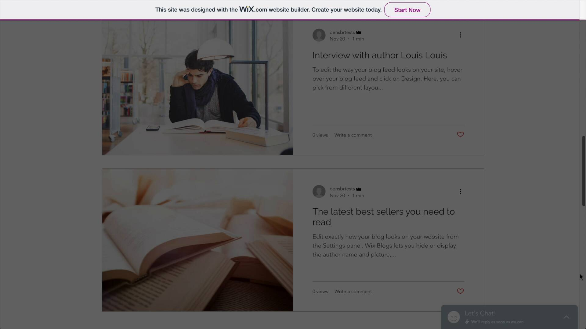

Wix is the largest website builder by market share. It powers almost twice as many websites as the runner up, Squarespace.
So is the Wix website builder also the best website builder? Should you use it for your small business?
Well it depends. Wix has a huge amount of functionality and the drag-and-drop editor gives more freedom than any other website building tools— but Wix also has a learning curve and the editor is occasionally frustrating.
Table of Contents
What is Wix?
Wix is a website builder. Website builders are tools for building your own website without having any HTML & CSS coding skills.
Wix sites include all the functionality you’ll need for a typical small business website or personal website:
- Photo Galleries
- Templates
- Web Hosting
- Ecommerce
- … And much, much more.
Wix has a free plan and up to 8 premium plans (depending on your country) that cost as little as $5 / month and as much as $500 / month.

The Wix website editor.
Wix Templates: Highly Customizable, But Not Without Challenges
Wix has a large selection of 900+ templates.
Some templates are clean and modern while others feel outdated. Some templates are multi-purpose and some are industry specific.
Example Wix Templates
Wix example template.
Another Wix example template.
Another example Wix template— though this one feels pretty outdated.
Template Customization
Wix gives you plenty of options for template customization.
For starters, you can move any element to anywhere on the page— even nudging it pixel by pixel.

Wix let's you move any element to anywhere on the page.
Individual elements can also be customized. Want to give this Heading 1 a font size of 12px? Wix allows you to do that.
Giving this Heading 1 a 12px font-size
This level of customization is not always a good thing. You have to be careful because websites are structured documents. Page elements like headings are wrapped in structured HTML tags that tell search engines what the element is.
For example, a Heading 1 isn’t just text. It’s wrapped in an H1 tag that tells Google what it is— so it’s incorrect to modify the font-size to make a heading look like a paragraph.
Headings are wrapped in an H1 tag that tells Google what the element is. So simply changing the style of the font to make it look like a paragraph is not ideal.
Wix Templates Are More Customizable Than Other Website Builders
You can really make significant changes to your Wix template. This is different from competitors like Squarespace or Weebly, which put limits on how much you can customize.
With Wix you can make enough changes to even design your website from scratch.
Wix includes tons of navigation elements, animations, shapes and more— all so that users can make their website exactly how they want it.

Wix includes more than enough elements to design your own template from scratch.
Customizing Styles Across Your Entire Website Is Problematic
Let’s say you want to update all of the headings on your website to have the same style.
Obviously you wouldn’t want to edit each individual heading— that would be too difficult. Instead you should be able to update the styles of all Headings in one place.
This is what Wix’s Theme Manager is for. It updates all the elements on your website.
Unfortunately I found it rarely worked as expected— for example updating the Heading 1 also messed up my logo:
Using the Theme Manager messed up my website logo.
Wix Templates On Mobile
Wix’s templates have a desktop version and a mobile version.
The mobile version is not responsive to browser breakpoints— so if you resize your browser, the design won’t automatically shift.
Instead Wix automatically detects a mobile device and serves a mobile version of your Wix website.
If you resize your browser, the design won't automatically shift.
You can customize both the desktop version and the mobile version of your Wix website. For example, you can hide elements on the mobile version and add additional elements just to the mobile version.
Customizing the mobile version.
This is an example of where Wix provides a lot of flexibility but where it can also go wrong. You need to keep an eye on two versions of your website because it can occasionally go out of sync:

My desktop and mobile versions go out of sync with one another.
Wix ADI
Wix ADI is like a setup wizard for your website. It asks you a series of questions (what is your website for? Do you have design preferences?) and it automatically sets up a website that has those things for you.
This is for users who want to get up and running quickly.
The Wix Editor: Drag And Drop Anywhere
Wix lets you drag elements anywhere on a page— even pixel by pixel. This is the biggest difference between using Wix and other website builders.
Wix is what I call an unstructured editor. It’s highly customizable.

You can drag any element anywhere on your page with Wix— even pixel by pixel.
Wix’s unstructured editor is both intuitive and confusing.
- It’s intuitive because as a user, the expectation is that I should be able to just drag and move any element I want.
- It’s confusing because websites aren’t really designed to work this way— and so Wix is straddling the users desire and the technical requirements.
Websites Aren’t Meant To Work This Way
Most website builders are structured editors.
For example, Squarespace lets you move elements— but only into rows and columns. There is an inherent structure that you are constrained to:

Squarespace structured editor only lets you drag and drop within the lines and grey boxes.
Why do other website builders like Squarespace constrain you within this structure? Because websites are made up of HTML— a structured language with order and hierarchy.
Wix’s unstructured editor leads to problems. For example, the mobile and desktop versions can go out of sync:
My desktop and mobile versions go out of sync with one another.
Here’s another example— watch what happens when I add more text to this page:
The image below the text also moves down— handy, because I obviously don't want the text and image overlapping. What's less obvious is that the image doesn't retain the same distance from the footer— instead it's flushed up against the margin of the footer.
And one last example— adding a store knocked my navigation out of balance:
Adding a store knocked navigation out of balance.
None of these examples are crippling. They are all fixable by the user. But they are annoying and they all stem from the same problem: the downside of the unstructured editor.
Key Takeaway: Just Be Aware
Wix’s unstructured editor is the main reason why I don’t use Wix for my personal websites.
But that’s just my personal decision. You’re not wrong to use Wix’s unstructured editor— being able to drag any element anywhere on the page is freeing and that will be appealing to some users.
Just be aware of the downsides!
Ecommerce
Should you use Wix for your online store?
Here is a good rule of thumb: Use Wix or Squarespace if you are building a smaller store and use Shopify if you are building a larger store.
The Difference Between Wix and Shopify
Wix is a general purpose website builder— so it can power a variety of websites. With Wix you could build websites for an artist, yoga studio, non-profit, small business, freelancer or anything else.
Shopify is just for powering ecommerce websites— so it is not general purpose.
Because Shopify is purely focussed on ecommerce, they have more ecommerce functionality and power.
For example, if you compare the Shopify and Wix app stores— Shopify has significantly more apps:
| Website Builder | Apps in App Store |
|---|---|
| Wix | 300 |
| Shopify | 6,000 |
Wix definitely covers the fundamentals of ecommerce— discounts, point of sale, tax, shipping etc. But Shopify tends to have more innovative features (example: Shopify Fulfillment) and more long-tail features (for example: Gift Wrap Upsells).
When To Use Wix Instead Of Shopify
Shopify has a steeper learning curve than Wix.
For example, Shopify’s page editor isn’t a drag and drop page editor like Wix. Instead it’s a WYSIWYG editor that is similar to Google Docs or Microsoft Word:
Shopify's page editor isn't a drag and drop page editor like Wix.
And while Shopify has some theme customization options, I’ve found myself often needing to edit CSS code to customize my theme.
Editing CSS to customize my Shopify theme.
So while Wix may not have the same functionality and power of Shopify, it is easier to use. So Wix could work for you if you have basic ecommerce needs and would like something easy to use.
Read More: Wix vs Shopify
Features For Business
If you are a website builder nerd (like me) and you listen to the quarterly calls Wix has with investors you will discover that Wix’s goal is to not just provide websites but to be an operating system for your business.
That’s not just corporate jargon. It’s a strategy we’ve seen Wix execute aggressively over the last few years.
Wix now has a ton of features— more than any other website builder. And many of the new features go beyond website building tools and into business services.
In this section, I’m going to give an overview of some (but not all) of Wix’s main features. Full disclosure: I haven’t tested each of these. It’s too much.
Wix Chat
Add live chat to your Wix website. You can customize the style of the chatbox, add chat hours, and get new chat notifications on the Wix mobile app (called the Wix Owner App).
Wix Members
Wix Members let’s your website have registered members. You can password protect content but you can mix Members this with:
- Feature — Example
- Wix Stores — Members can check past orders.
- Wix Bookings — Members can manage appointments.
- Pricing Plans — Members can manage their paid subscriptions.
- Wix Forum — Members can participate in an online forum.
- Wix Blog — Members can follow specific blog authors.
Wix Multilingual
Wix let’s you translate content manually or automatically (using Google Translate). And it’s not just for text— you can swap out images, menus and buttons for different translations too.
Your visitors can toggle the language using a switch at the top of your website.
It’s the best multi-lingual functionality I’ve seen in any website builder.
Wix Bookings
Wix Bookings is a scheduling system that can power a variety of services: classes, appointments, workshops and more.
Here are a few feature highlights:
- Text / sms / email appointment reminders.
- A Zoom integration for virtual meetings.
- Membership plans (example: a monthly Yoga subscription).
- Sync with Google Calendar.
Wix Restaurants
Wix Restaurants let’s you create restaurant menus for your website, accept online orders and take reservations and payments.
Wix Events
Create email event invitations, keep track of RSVPs and even sell tickets on your website.
Tip: You can also create a Shared Gallery so that attendees can like and share photos from the event.
Wix Video
Wix lets you host your own videos— which is unusual most website builders (example: Squarespace) do not let you host your own videos.
They also include a video maker for creating social media videos.
Wix also allows you to sell your videos— commission free. You can offer them as a one-time price or a monthly subscription.
Tip: Video requires lots of storage space, so be mindful of the storage space limit on Wix’s premium plans.
Wix Mobile App
Wix’s mobile app (called the Wix Owner App) is not for designing your website— that can’t be done on mobile.
Instead the app lets you manage business features on the go. Here are a few examples:
- Manage bookings
- Respond to live chat requests
- Create social posts
- Moderate your forum
- Manage blog posts
Ease Of Use: Is Wix User Friendly?
Wix is intuitive but it does have a learning curve.
Here’s an example:
The page editor is intuitive— because it lets you move individual elements anywhere on a page. Just drag and drop.
Wix let's you move elements anywhere on a page.
But the page editor also creates complications. For example, watch this video of me struggling with the footer of a page:
Running into frustration with the footer.
The Editor Can Be Overwhelming
Overall the Wix editor has a lot going on at once. There are often multiple menus calling out for the users attention— it can be overwhelming:
The Wix editor can be a bit overwhelming.
This is sort of the Wix approach: they make every option available to the user and let the user decide what to use.
Also some tasks— such as editing your restaurant menu— feel needlessly clunky. Watch how many clicks it takes to edit a menu item:
Watch how many clicks it takes to edit a menu item.
Wix Pricing: Choosing The Right Wix Plan
Premium Plans
Wix has 8 paid plans. These are the plans for just websites:
- The Connect Domain plan is only available in certain countries. It includes an ad on your website.
- The Combo plan has everything you’ll need for a basic website but it limits traffic to 2 GB of bandwidth.
- The Unlimited plan has unlimited bandwidth. It’s what I’d suggest most users start with.
- The VIP plan gives you access to priority customer support— so you can jump the line on phone support.
… And these are the ecommerce plans:
- The Business Basic is Wix’s first ecommerce plan. It has some feature limitations (ex: no subscription products or dropshipping).
- The Business Unlimited gives you access to the ecommerce features that Business Basic does not.
- The Business VIP gives you access to priority customer support— so you can jump the line on phone support.
In addition, Wix.com also offers the Wix Enterprise plan but that starts at $500.
A couple notes:
- Wix advertises the monthly cost of annual plans on their pricing page. It’s confusing. You’re not able to see the actual price of monthly plans until you hit checkout.
- All ecommerce plans (Business Basic, Business Unlimited and Business VIP) also include online store tools for bookings, ticket sales, restaurant orders, hotel reservations and artist ecommerce features.
- You get a free domain name for the first year if you choose an annual plan. This is available for every plan except for the Connect Domain plan. (This must be for a new custom domain name— you can’t use this to renew an existing domain name.)
- All plans include a free SSL certificate.
- Wix includes $300 in ad vouchers for several plans. These vouchers need to be used within 2 months or they expire.
The Wix Free Plan
There is a free version of Wix— but it limits you to 500 MB of bandwidth per month and they include an ad on your free website.
Here is what the Wix ads look like:
This ad scrolls alongside free Wix websites.
How often does Wix offer 50% off?
Wix offers 50% off as often as every two weeks.
For example, I signed up to Wix and was served a Limited Time Offer that expired on February 3:
This offer expired on February 3rd.
… Another 50% off Limited Time Offer was back by February 17!
Custom Domain Names
Registering a domain name with Wix costs $14.95 / year.
Private Registration for your domain name costs an additional $9.90 / year.
The first year of domain names are free if you purchase an annual plan.
What is Private Registration?
Domain names must have up-to-date contact information for the public Whois database (this is a requirement). This contact information is accessible to anyone (including marketing firms and spammers) but with Private Registration the public contact information will not be your contact information.
Do you own your domain name? Or does Wix?
You do. Wix is just helping you register the domain name— the domain name is yours and you move it to another domain name registrar at any time.
You can also add your own domain name from another provider. This can be a bit intimidating but Wix has a helpful guide to doing that.
Wix Ascend
Wix Ascend is collection of marketing tools and add-ons. Access to it costs an additional price on top of your website plan.
Here are some of the tools:
- Contacts — Like a CRM for anyone who interacts with your website and business.
- Members — Adds membership functionality to your website.
- Wix Inbox — Manage live chats and form submissions.
- Wix Chat — Add live chat to your website.
- Wix Forms — Paid plans add more form builder functionality (example: accepting online payments).
- Wix Automations — Create triggers and and actions for marketing automations. Similar to Zapier.
- Wix Invoices & Price Quotes — For sending quotes and invoices to customers.
- Tasks — A to-do list app.
- SEO Wiz — An SEO tool. Basically like a checklist wizard.
- Email Marketing — Wix’s own email marketing tool.
- Social Posts — A tool for creating social media assets.
- Marketing Integrations — Easily connect with tools like Google Analytics and Facebook Pixel.
- Logo Maker — A free tool to create professional logos.
Wix App Market
The Wix App Market is an app store with about 300 apps— they . There are third party apps and apps created by Wix. Apps can be either free or cost money.
Here are some example apps:
- Get Google Ads ($75 / month) — Makes it much easier to advertise your website on Google Ads.
- Wix Site Search (Free) — Adds a search engine widget to your website.
- Simple Push Notifications (Free - $20 / month) — Allows you to send push notifications to your visitors.
Editor X
Editor X is another tool from Wix for building websites— but it has a completely different interface from the Wix website builder.
It’s much more customizable (similar to Webflow) and is meant for more advanced users. It also has different pricing.
Wix SEO: Is It Any Good?
SEO or Search Engine Optimization is the practice of increasing traffic from search engines such as Google.
Wix goes further than other website builders when it comes to SEO features. For example: you can manually add your own structured data. I don’t know of another website builder with a similar feature.
Here’s an overview of Wix’s main SEO features:
- Meta Title and Description — Completely customizable.
- 301 Redirects — You can add them one by one or you can bulk upload redirects by CSV which is great.
- Structured Data — While Wix automatically adds structured data, you can also manually add your own structured data for static pages. This is huge.
- SSL — All Wix domains have SSL— which Google has said is a ranking signal.
- OG Tags — Useful for social media card previews.
- Sitemap — Wix automatically generates and submits an XML sitemap to Google.
Wix let's you manually add your own structured data per page.
Is Wix Good For Advanced SEO?
Wix goes further than other website builders when it comes to SEO features— but website builders aren’t meant to be as customizable as platforms like Wordpress where you control the code.
For example, you can’t change the CDN of a website builder— which is good. The whole point of website builders is that you shouldn’t have to dive into technical features. Everything should just work.
But that’s also why a website builder will probably never match the functionality of Wordpress’s Joast SEO Plugin.
Frequently Asked Questions
How does Wix compare to Squarespace?
Wix and Squarespace are the two most popular website builders— but they have differences. It's almost like Mac vs PC. Wix is occasionally chaotic but allows for a lot of freedom to customize (PC). Squarespace is curated and design-y (Apple). Read more in my Wix vs Squarespace comparison.
How does Wix compare to Wordpress?
Wix and Wordpress are both tools for building websites but they have completely different approaches. Wordpress is a free, open-source CMS but you have to pay for plugins, themes and hosting. Wix is an all-in-one package— so features, themes and hosting is all included. You can read more in my Wix vs Wordpress comparison.
How does Wix compare to Weebly?
Weebly is easier to use but Wix is more flexible and powerful. Read more in my Wix vs Weebly comparison.
How does Wix compare to GoDaddy?
Wix is more flexible and powerful than GoDaddy. GoDaddy is simpler and a bit easier to use— though at times GoDaddy is too simple. For more on GoDaddy, read my review.
How does Wix compare to Shopify?
Shopify is just for ecommerce websites. Wix is for all types of websites— including ecommerce. Shopify has more powerful ecommerce features but a steeper learning curve. For more on Shopify, read my review.
Is it easy to cancel your Wix account?
Yes. You can get exact instructions with their support doc but I was able to cancel my Wix account through a web-based interface— so I didn't have to call customer support or anything frustrating like that.
How many Wix users are there?
Wix is the most used website builder. According to our annual State of Website Builders report there are over 4.5 million websites powered by Wix.
Do you own your own domain with Wix?
Yes. Wix just helps you register your domain name— they do not own it.
Do freelancers use Wix for website design?
Yes. This is actually a high-growth area for Wix and they have invested in features specifically for freelancers such as Editor X and Velo. Go to Wix Freelancers for more info.
Related Articles:
-
GoDaddy Website Builder Review
GoDaddy has aggressively improved their website builder over last few years— it's now a solid package.
-
Shopify Review
Through intuitive software and innovative features, Shopify has become the best ecommerce website builder.
-
Squarespace Review
Is Squarespace the best website builder? What are the pros and cons? Read on for the answers!
-
Webflow Review
Webflow provides the flexibility of front-end coding without requiring you to actually code.
-
Weebly Review
Weebly is an excellent, easy to use website builder that is also going through a transition.